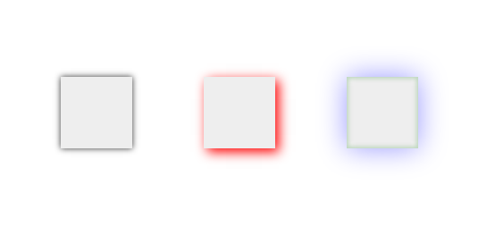

- ...
Sass
Syntactically Awesome Style Sheets
Follow this presentation erinwilbur.com/sass-compass
Githubs: github.com/likedaang/sass-compass
New Logo!
Old
New
What is Sass?
- Sass is a preprocessor that you write in a slightly more modified CSS-like syntax that is processed into plain CSS either in your development environment or as part of your deployment process
- Created by Hampton Catlin (also responsible for creating HAML) & primary developers: Nathan Weizenbaum & Chris Epstein
- Baked into Rails
(from sass-lang.com)
It allows you to use variables, nested rules, mixins, inline imports, and more, all with a fully CSS-compatible syntax.
Sass keeps you organzied and gets you up and running quickly with the Compass style library.
Types of syntax:
.scss
- Sassy CSS
- more widely used
- An extension of the syntax of CSS3
.sass
- Indented syntax
- the older of the two
- Uses intendation rather than brackets to indicate nesting
- Newlines rather than semicolons to separate properties
Install Sass
Sass can be used in three ways:
- as a command-line tool
- as a standalone Ruby module
- as a plugin for any Rack-enabled framework
If you are feeling adventurous check out tools for managing multiple ruby environments: rvm & rbenv
To run Sass from the command line, just use:
sass input.scss output.css
You can also tell Sass to watch the file and update the CSS every time the Sass file changes:
sass --watch input.scss:output.css
If you have a directory with many Sass files, you can also tell Sass to watch the entire directory:
sass --watch app/sass:public/stylesheets
Use sass --help for full documentation
Compass!
- Compass is an open-source Sass Framework consisting of a collection of helpful tools and Sass library that produces battle-tested cross-browser CSS
- It was created by Chris Epstein
Installing Compass
Compass runs on any computer that has ruby installed.
Setting up the ruby environment
gem update --system
gem install compass
For terminal newbies have a look a this.
Create your compass project:
compass create sass-demo
creates:
directory sass-demo/
directory sass-demo/sass/
directory sass-demo/stylesheets/
create sass-demo/config.rb
create sass-demo/sass/screen.scss
create sass-demo/sass/print.scss
create sass-demo/sass/ie.scss
create sass-demo/stylesheets/ie.css
create sass-demo/stylesheets/print.css
create sass-demo/stylesheets/screen.css
Almost there!
You must compile your sass stylesheets into CSS when they change. This can be done in one of the following ways:
- To compile on demand:
compass compile [path/to/project] - To monitor your project for changes and automatically recompile:
compass watch [path/to/project]
(Also remember to import your newly compiled css files in your html doc)
However,
If this sort of thing frightens you...
Other options for installing compass

Compass.app from Handlino.
Scout from Mutually Human.
Ready to write some Sass
Nesting
SCSS
nav {
ul {
margin: 0;
padding: 0;
list-style: none;
}
li { display: inline-block; }
a {
display: block;
padding: 6px 12px;
text-decoration: none;
}
}
CSS
nav ul {
margin: 0;
padding: 0;
list-style: none;
}
nav li {
display: inline-block;
}
nav a {
display: block;
padding: 6px 12px;
text-decoration: none;
}
This is Neat
Everyone is happy!
But hold up
Proceed with caution - before you know it you could have yourself a CSS Selector Nightmare
Suppose someone gives you this lovely bit of HTML:
Hey! I'll totally use my cool nesting skillz!
body {
div.container {
div.content {
div.articles {
& > div.post {
div.title {
h1 {
a {
}
}
}
div.content {
p { ... }
ul {
li { ... }
}
}
div.author {
a.display {
img { ... }
}
h4 {
a { ... }
}
p {
a { ... }
}
ul {
li { ... }
}
}
}
}
}
}
}
oh......
body { ... }
body div.content div.container { ... }
body div.content div.container div.articles { ... }
body div.content div.container div.articles > div.post { ... }
body div.content div.container div.articles > div.post div.title { ... }
body div.content div.container div.articles > div.post div.title h1 { ... }
body div.content div.container div.articles > div.post div.title h1 a { ... }
body div.content div.container div.articles > div.post div.content { ... }
body div.content div.container div.articles > div.post div.content p { ... }
body div.content div.container div.articles > div.post div.content ul { ... }
body div.content div.container div.articles > div.post div.content ul li { ... }
body div.content div.container div.articles > div.post div.author { ... }
body div.content div.container div.articles > div.post div.author a.display { ... }
body div.content div.container div.articles > div.post div.author a.display img { ... }
body div.content div.container div.articles > div.post div.author h4 { ... }
body div.content div.container div.articles > div.post div.author h4 a { ... }
body div.content div.container div.articles > div.post div.author p { ... }
body div.content div.container div.articles > div.post div.author p a { ... }
body div.content div.container div.articles > div.post div.author ul { ... }
body div.content div.container div.articles > div.post div.author ul li { ... }
Several Reasons why this is gross
- Poor Rendering Performance
- Unnecessary increase in file size
- Maintainability

Inception Rule
Don't go more than four levels deep.
Change the way you think
Try to improve your understanding of the required CSS through contexts, objects and interaction states.
Context:
SCSS:
cart {
#sidebar { width: 150px; }
#content { width: 850px; }
}CSS:
cart #sidebar {width:150px;}
cart #content {width:850px;}
Objects:
#sideabr
#content
#footer
.blog-post
.comment
.widget
.logo
.user
.buttonInteraction:
a {
font-weight: bold;
text-decoration: none;
&:hover { text-decoration: underline; }
body.firefox & { font-weight: normal; }
}
keep it simple
SCSS
.content {
border: 1px solid #ccc;
padding: 20px;
h2 {
font-size: 3em;
margin: 20px 0;
}
p {
font-size: 1.5em;
margin: 15px 0;
}
}
CSS
.content {
border: 1px solid #ccc;
padding: 20px;
}
.content h2 {
font-size: 3em;
margin:20px 0;
}
.content p {
font-size: 1.5em;
margin:15px 0;
}
Nesting Properties
SCSS
.btn {
text: {
decoration: underline;
transform: lowercase;
}
}
CSS
.btn {
text-decoration: underline;
text-transform: lowercase;
}
& Symbol
References the parent selector
SCSS
.content {
padding: 20px;
.callout {
border-color: red;
}
&.callout {
border-color: green;
}
}
CSS
.content {
padding:20px;
}
.content .callout {
border-color:red;
}
.content.callout {
border-color: green;d
}
There's more!
So, what if I wanted to style all my h3 headings a certain way, but for this one h3, that is also a child of a certain selector, I need it different
SCSS
h3 {
font-size: 20px;
margin-right: 10px;
.some-parent-selector & {
font-size: 24px;
margin-bottom:20px;
}
}
CSS
h3 {
font-size: 20px;
margin-bottom: 10px;
}
.some-parent-selector h3 {
font-size: 24px;
margin-bottom: 20px;
}
Variables
SCSS
$base: #999999;
.sidebar {
border: 1px solid $base;
p {
color: $base;
}
}
CSS
.sidebar {
border: 1px solid #999999;
}
.sidebar p {
color: #999999;
}
More Variables
SCSS
// Colors
// -------------------------
$emerald: #2ecc71;
$carrot: #e67e22;
$silver: #bdc3c7;
// Typography
// -------------------------
$font-base: "Lato", Helvetica, Arial, sans-serif;
$font-demo: "Helvetica Neue", Helvetica, Arial, sans-serif;
$font-monospace: Monaco, Menlo, Consolas, "Courier New", monospace;
$font-size-base: 18px;
$line-height-base: 1.72222; // 31/18
// Components
// -------------------------
$border-radius-base: 4px;
$border-radius-large: 6px;
$border-radius-small: 3px;
// Forms
// -------------------------
$input-height-small: 35px;
$input-height-base: 41px;
$input-height-large: 45px;
$input-height-huge: 53px;
$input-border-radius: $border-radius-large;
$rounded: false;
$shadow: true;
$authors: nick, dan, aimee, drew;
$module-margin: 40px 0 20px 100px;
*Keep scope in mind:
Variables are only available within the level of nested selectors where they’re defined
Mixins
Don't Repeat Yourself: Use Mixins
CSS
.btn-a {
background: #777;
border: 1px solid #ccc;
font-size: 1em;
text-transform: uppercase;
}
.btn-b {
background: #ff0;
border: 1px solid #ccc;
font-size: 1em;
text-transform: uppercase;
}
SCSS
@mixin button {
border: 1px solid #ccc;
font-size: 1em;
text-transform: uppercase;
}
.btn-a {
@include button;
background: #777;
}
.btn-b {
@include button;
background: #ff0;
}
*Make sure your @include mixin comes before the @include
Mixin cont.
So we have our normal mixin and use it for h1 tags.
@mixin large-text {
font: {
family: Arial;
size: 20px;
weight: bold;
}
color: #ff0000;
}
h1 {
@include large-text;
margin-bottom: 0.5em;
}
Mixins in Mixins
Let's say you have a need to separate out typography and design elements - at times you need both:
@mixin compound {
@include highlighted-background;
@include header-text;
}
@mixin highlighted-background {
background-color: #fc0;
padding: 0.5em;
}
@mixin header-text { font-size: 20px; }
.main-content{
@include highlighted-background;
h1 {
@include header-text;
}
}
.sub-footer h1 {
@include compound;
}
Adding Default Arguments to Mixins
SCSS
@mixin wacky-border($color, $width: 1in) {
border: {
color: $color;
width: $width;
style: dashed;
}
}
p { @include wacky-border(blue); }
h1 { @include wacky-border(blue, 2in); }
CSS
p {
border-color: blue;
border-width: 1in;
border-style: dashed; }
h1 {
border-color: blue;
border-width: 2in;
border-style: dashed; }
*Make sure your optional args come last
Content Blocks in Mixins
It is possible to pass a block of styles to the mixin for placement within the styles included by the mixin. The styles will appear at the location of any @content directives found within the mixin. This makes is possible to define abstractions relating to the construction of selectors and directives.
SCSS
@mixin apply-to-ie6-only {
* html {
@content;
}
}
@include apply-to-ie6-only {
#logo {
background-image: url(/logo.gif);
}
}
CSS
* html #logo {
background-image: url(/logo.gif);
}
Content Blocks for Media Queries
Method 1:
@mixin respond-to($media) {
@if $media == handhelds {
@media only screen and (max-width: 479px) { @content; }
}
@else if $media == wide-handhelds {
@media only screen and (min-width: 480px) and (max-width: 767px) { @content; }
}
@else if $media == tablets {
@media only screen and (min-width: 768px) and (max-width: 959px) { @content; }
}
}
#sidebar {
float: left;
width: 300px;
@include respond-to(handhelds) { float: none; }
@include respond-to(wide-handhelds) { float: none; }
@include respond-to(tablets) { width: 240px; }
}
Compiles out:
#sidebar {
float: left;
width: 300px;
}
@media only screen and (max-width: 479px) {
#sidebar {
float: none; }
}
@media only screen and (min-width: 480px) and (max-width: 767px) {
#sidebar {
float: none; }
}
@media only screen and (min-width: 768px) and (max-width: 959px) {
#sidebar {
width: 240px; }
}
// and for every instance inside a selector
#content {
width: 960px;
}
@media only screen and (max-width: 479px) {
#content {
width: 200px; }
}
@media only screen and (min-width: 480px) and (max-width: 767px) {
#content {
width: 300px; }
}
@media only screen and (min-width: 768px) and (max-width: 959px) {
#content {
width: 600px; }
}
Method 2:
@mixin bp($point) {
@if $point == papa-bear {
@media (max-width: 1600px) { @content; }
}
@else if $point == mama-bear {
@media (max-width: 1250px) { @content; }
}
@else if $point == baby-bear {
@media (max-width: 600px) { @content; }
}
}
@include bp(baby-bear) {
#sidebar {
width:100%;
}
}
@include bp(medium) {
#sidebar {
width:50%;
}
#content {width: 70%;}
}
Compiles out:
@media (max-width: 480px) {
#sidebar {
width: 100%;
}
}
@media (min-width: 800px) and (max-width: 1000px) {
#sidebar {
width: 50%;
}
#content {
width: 70%;
}
}
Mind sufficiently melted? Check out more:
#{} Interpolation in Mixins
SCSS
@mixin highlight($color, $side) {
border-#{side}-color: $color;
}
.btn-a {
@include highlight(#f00, right);
}
CSS
.btn-a {
border-right-color: #ff0;
}
*Make sure your optional args come last
@Extends
Dummy!
CSS
.error {
border: 1px #f00;
background-color: #fdd;
}
.seriousError {
border-width: 3px;
}
CSS
.error {
border: 1px #f00;
background-color: #fdd;
}
.seriousError {
@extend .error;
border-width: 3px;
}
*Keep in mind if you are @extending a selector that has nested selectors, things could get ugly!
Placeholder Selectors
Always think: How can I make this more efficient?
SCSS
%btn {
background: #777;
border: 1px solid #ccc;
font-size: 1em;
text-transform: uppercase;
}
.btn-a {
@extend %btn;
}
.btn-b {
@extend %btn;
background: #ff0;
}
.sidebar .btn-a {
text-transform: lowercase;
}
CSS
.btn-a,
.btn-b {
background: #777;
border: 1px solid #ccc;
font-size: 1em;
text-transform: uppercase;
}
.btn-b {
background: #ff0;
}
.sidebar .btn-a {
text-transform: lowercase;
}
Control Directives
- @if
- @for
- @each
- @while
Sass control directives add a ton of power to scaling and reuse of your code.
@each
SCSS
$authors: nick, aimee, dan, drew;
$colors: green, blue, red, yellow;
$author-style: zip($authors, $colors);
@each $a in $author-style {
.author-#{nth($a,1)} {
background: nth($a, 2);
}
}
CSS
.author-nick {
background: green;
}
.author-aimee {
background: blue;
}
.author-dan {
background: red;
}
.author-drew {
background: yellow;
}
...and finally
compass-style.org
gem update --system
gem install compass
@import "compass"; // This goes at the top of your main.scss file
Compass Core Framework
Imports
- CSS3
- Typography
- Utilities
Non Imported Modules
- Reset:
@import "compass/reset"; - ! Don't use this if you plan to use normalize.css
- Layout
CSS3 Demo:
Box-shadow
HTML
SCSS
@import "compass/css3";
.box-shadow-example div {
width: 40px;
height: 40px;
background: #eeeeee;
margin: 20px;
float: left; }
// Default single box shadow
#box-shadow-default {
@include single-box-shadow; }
// Box shadow with custom settings
#box-shadow-custom {
@include box-shadow(red 2px 2px 10px); }
#box-shadow-custom-multiple {
@include box-shadow(rgba(blue, 0.4) 0 0 25px, rgba(green, 0.2) 0 0 3px 1px inset); }
scale-lightness shortcuts the sass scale_color use:
SCSS
.content {
color: scale_color(#eee, $lightness: 7%);
}
with Compass
@import "compass"; // top of main.scss
.content {
color: scale-lightness(#eee, 7%); // or use a negative value to darken
}
There's also shade, saturation, tint...
CSS Shapes
Using opposite-position
SCSS
@mixin caret($point) {
$opposite: opposite-position($point);
border: 100px solid transparent;
border-#{$opposite}: 100px solid #000; // makes border-bottom
border-#{$point}: 0; // makes border-top
height:0;
width:0;
}
.arrow-up {
@include caret(top);
}
.arrow-over {
@include caret(right);
}
@function button-text($bg) {
@return contrast-color($bg, #333, #eee, 50%);
}
.btn-a {
background: #222;
color: button-text(#222); // outputs #eee
}
.btn-b {
background: #aaa;
color: button-text(#aaa) // outputs #333
}
@import "compass/layout";
.content {
height:400px;
position: relative;
width: 400px;
}
.sidebar {
background: #be9947;
@include stretch(5px, auto, 5px, 5px);
width:100px;
}
Structuring your projects
stylesheets/
|
|-- modules/ # Common modules
| |-- _all.scss # Include to get all modules
| |-- _utility.scss # Module name
| |-- _colors.scss # Etc...
| ...
|
|-- partials/ # Partials
| |-- _base.sass # imports for all mixins + global project variables
| |-- _buttons.scss # buttons
| |-- _figures.scss # figures
| |-- _grids.scss # grids
| |-- _typography.scss # typography
| |-- _reset.scss # reset
| ...
|
|-- vendor/ # CSS or Sass from other projects
| |-- _colorpicker.scss
| |-- _jquery.ui.core.scss
| ...
|
`-- main.scss # primary Sass file
images
SCSS
@import "compass";
.logo {
background: image-url('jeffrey.png');
height: image-height('jeffrey.png');
width: image-width('jeffrey.png');
}
CSS
.logo {
background: url('/images/jeffrey.png');
height: 236px;
width: 236px;
}
* You can also use inline-image('img.png') to base64 embed images into CSS.
Grids
- Horizontal
- Susy (Responsive Grid for Compass)
- Gumby
- Foundation
- Vertical
- Vertical Rhythm with Compass
But I am a designer! This is all very complicate
It will make your life easier
Fully grasp organizing your CSS first:
Changes will be required
Make them less painful
- Think separation into self-contained modules
- Treat every component as if it was reusable
- Essentially, be mindful of naming convention inside a file organization strategy that makes sense
The Goal
Any time you update a code block or change the 'experience':
- Want the experience to be the same everywhere on the site or in the app
- Don't want it to conflict within the different areas it lives
- Don't want to RE-DESIGN every single time
Resources
- Website: compass-style.org
- Sass: sass-lang.com
- Community: groups.google.com/group/compass-users
- The Sass Way: thesassway.com
Thanks!
- Corvisa: corvisa.com
- Github: github.com/likedaang/sass-compass
- Twitter: @likedaang
- Made with: reveal.js